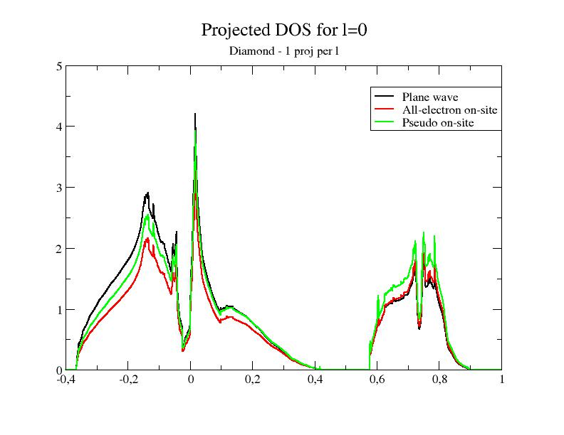
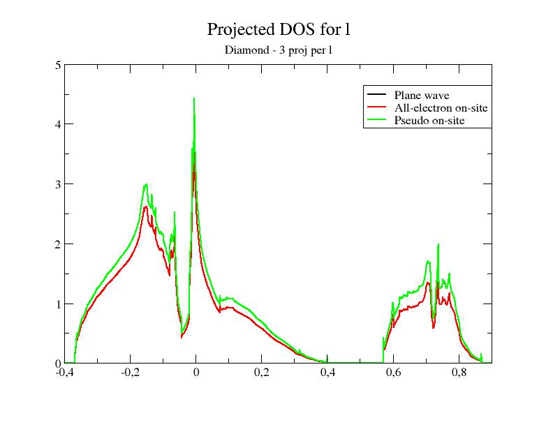

ABINIT tutorial. First lesson on the projector-augmented wave (PAW) technique :
Projector Augmented-Wave technique, how to use it ?
This lesson aims at showing how to perform a calculation in
the
frame of the PAW method.
You will learn how to launch a PAW calculation and what are
the main
input
variables that govern convergence and numerical efficiency.
It is supposed that you already know how to use ABINIT in the
norm-conserving pseudopotential case.
This lesson should take about 1.5 hour.
Copyright (C) 2000-2017 ABINIT group (MT,FJ)
First lesson on the projector-augmented wave (PAW) technique table of content:
- 0. Summary of the PAW method
- 1. Using PAW with ABINIT
- 2. The convergence on plane-wave cut-off (ecut)
- 3. The convergence on double FFT grid cut-off (pawecutdg)
- 4. Plotting PAW contributions to the DOS
- 5. Testing the completeness of the PAW partial wave basis
- 6. Checking the validity of PAW results
- 7. Additional comments about PAW in ABINIT
0. Summary of the PAW method
The PAW (Projector Augmented-Wave) method has been
introduced by Peter Blöchl in 1994. As he says, "The projector
augmented-wave method is an extension of augmented wave methods and the
pseudopotential approach, which combines their traditions into a
unified
electronic structure method".
It is based on a linear and invertible transformation (the PAW
transformation) that connects the "true" wavefunctions Ψn
with
"auxiliary"
(or "pseudo") soft wavefunctions~Ψn
:
|Ψn>
=~|Ψn>+
Σ (φi
-~φi)
<~pi |~Ψn >
This
relation
is based on
the definition of atomic spheres (augmentation
regions) of radius rc,
around the atoms of the
system in which the partial
waves | φi>
form a basis
of atomic wavefunctions; |~φi>
are "pseudized" partial
waves (obtained from |
φi>), and ~pi
are dual functions
of
the |~φi> called
projectors.
It is therefore possible to write every quantity depending on Ψn
(density, energy, Hamiltonian) as a function of~Ψn
and to find~Ψn
by solving self-consistent equations.
The PAW method has two main advantages:
- From~Ψn,
it is always
possible to obtain the true "all electron"
wavefunction Ψn.
- The convergency is comparable
to an ultrasoft pseudopotential one.
From a practical point of view (user's point of view), a PAW calculation is rather
similar to a norm-conserving pseudopotential one. Most noticeably, one will have to use
a special atomic data file
(PAW dataset)
that contains the φi,~φi and ~pi
and that plays
the same role as a pseudopotential file.
It is highly recommended to read the following papers to
understand
correctly the basic concepts of the PAW method:
[1] "Projector augmented-wave
method", P.E.
Blochl, Physical Review B 50,
17953
(1994)
[2] "From ultrasoft pseudopotentials
to
the projector augmented-wave method", G. Kresse and D.
Joubert, Physical Review
B 59, 1758
(1999)
The implementation of the PAW method in ABINIT is detailed
in the following paper, describing specific notations and formulations:
[3]
"Implementation of the
projector augmented-wave method in the ABINIT code: Application to the
study of iron under pressure", M. Torrent, F. Jollet, F.
Bottin, G. Zerah, and X. Gonze, Computational Materials Science 42, 337
(2008)
1. Using PAW with ABINIT
Before continuing, you might
consider to work in a different
subdirectory as for the other lessons. Why not "Work_paw1" ?
In what follows, the name of files are
mentioned as if
you were in this subdirectory.
All the input files can be found in the ~abinit/tests/tutorial/Input
directory.
You can compare your results with reference
output files located in ~abinit/tests/tutorial/Refs
and ~abinit/tests/tutorial/Refs/tpaw1_addons
directories (for the present tutorial they are named
tpaw1_*.out).
The input file tpaw1_1.in
is an example of a file
that contains data for computing the total energy for diamond
at the experimental volume (within the LDA exchange-correlation
functional).
You might use the file tpaw1_1.files
(with a standard
norm-conserving pseudopotential)
as a "files" file, and get the corresponding output file
(it is available as ../Refs/tpaw1_1.out).
Copy the files tpaw1_1.in
and tpaw1_1.files
in your work
directory, and run ABINIT:
abinit < tpaw1_1.files > tmp-log
In the meantime, you can read the input file and see that there
is no
PAW input
variable.
ABINIT should run very quickly...
Now, open the tpaw1_1.files
and modify the last line; replace the 6c.pspnc
file by 6c.lda.atompaw.
Run ABINIT again:
abinit < tpaw1_1.files > tmp-log
Your
run should stop before end ! The input file
is missing a mandatory argument: pawecutdg
!!
Add the line "pawecutdg
50." in the tpaw1_1.in file
and run ABINIT again.
Now ABINIT runs to the end.
Note
that the time needed for the PAW run is greater than the time needed
for the norm-conserving pseudopotential run; indeed, at constant value
of plane wave cut-off energy ecut,
PAW requires more computational
resources: -
the "on-site"
contributions have to be computed,
- the nonlocal contribution of the PAW dataset uses 2 projectors
per angular momentum, while the nonlocal contribution of the present
norm-conserving pseudopotential uses only one.
However,
as the plane wave cut-off energy required by PAW is much
smaller than the cut-off needed for the norm-conserving
pseudopotential (see next section), a PAW calculation will actually
require less CPU time.
Let's open the output file and have a look inside (be
careful, it is the last output file of the tpaw1_1 series).
Compared to an output file for a norm-conserving pseudopotential run,
an
output file for PAW contains
the following specific topics:
At
the beginning of the file:
-outvars:
echo values
of preprocessed input variables --------
- The use of two FFT grids,
mentioned as:
Coarse
grid specifications (used for wave-functions):
getcut: wavevector= 0.0000
0.0000 0.0000 ngfft= 18
18 18
ecut(hartree)=
15.000 => boxcut(ratio)=
2.17276
Fine grid specifications (used for densities):
getcut: wavevector= 0.0000
0.0000 0.0000 ngfft= 32
32 32
ecut(hartree)=
50.000 => boxcut(ratio)=
2.10918
- A specific description
of the PAW dataset
(you might
follow
the tutorial PAW2, devoted to the building of the PAW atomic data, for
a complete understanding of the file):
Pseudopotential
format is: paw4
basis_size (lnmax)= 4 (lmn_size= 8),
orbitals= 0
0 1 1
Spheres core radius: rc_sph= 1.50000000
4 radial meshes are used:
- mesh 1: r(i)=AA*[exp(BB*(i-1))-1], size= 505 , AA=
0.21824E-02 BB= 0.13095E-01
- mesh 2: r(i)=AA*[exp(BB*(i-1))-1], size= 500 , AA=
0.21824E-02 BB= 0.13095E-01
- mesh 3: r(i)=AA*[exp(BB*(i-1))-1], size= 530 , AA=
0.21824E-02 BB= 0.13095E-01
- mesh 4: r(i)=AA*[exp(BB*(i-1))-1], size= 644 , AA=
0.21824E-02 BB= 0.13095E-01
Shapefunction is SIN type:
shapef(r)=[sin(pi*r/rshp)/(pi*r/rshp)]**2
Radius for shape functions = sphere core radius
Radial grid used for partial waves is grid 1
Radial grid used for projectors is grid 2
Radial grid used for (t)core density is grid 3
Radial grid used for Vloc is grid 4
Radial grid used for pseudo valence density is grid 4
After
the SCF cycle section:
- The value of the
integrated compensation charge evaluated by two different numerical methodologies
(remember: PAW atomic dataset are not norm-conserving pseudopotentials); it is
given calculated in the augmentation regions (PAW spheres) on
the
"spherical" grid and also in the whole simulation cell on the "FFT"
grid. A discussion on these two values will be done in a
forthcoming section.
PAW
TEST:
==== Compensation charge inside spheres ============
The following values must be close to each other ...
Compensation charge over spherical meshes
= 0.413178580356274
Compensation charge over fine fft
grid
= 0.413177280314290
-
Information concerning the non-local term
(pseudopotential
strength Dij
) and the spherical density matrix (augmentation
wave
occupancies Rhoij)
==== Results
concerning PAW augmentation regions ====
Total pseudopotential strength Dij (hartree):
Atom # 1
...
Atom # 2
...
Augmentation
waves occupancies Rhoij:
Atom # 1
...
Atom # 2
...
At
the end of the file:
- The decomposition of
the total energy both by direct calculation and
double counting calculation:
--------------------------------------------------------------------------------
Components of total free energy (in Hartree) :
Kinetic energy =
6.40164318808980E+00
Hartree energy =
9.63456708252837E-01
XC
energy =
-3.53223656186138E+00
Ewald
energy = -1.27864121210521E+01
PspCore energy =
5.41017918797015E-01
Loc. psp. energy= -5.27003595856857E+00
Spherical terms =
2.15689044331394E+00
>>>>>
Internal E= -1.15256763830284E+01
"Double-counting" decomposition of free energy:
Band
energy =
6.87331579398577E-01
Ewald
energy = -1.27864121210521E+01
PspCore energy =
5.41017918797015E-01
Dble-C XC-energy=
1.22161340385476E-01
Spherical terms = -8.97688814082645E-02
>>>>>
Internal E= -1.15256701638793E+01
>Total energy in
eV
= -3.13629604304723E+02
>Total DC energy in
eV
= -3.13629435073068E+02
Note that the total energy calculated in PAW is not the same
as the one obtained
in the norm-conserving pseudopotential case.
This is normal: in the norm-conserving potential case, the
energy reference has been arbitrarily modified by the pseudopotential construction procedure.
Comparing total energies computed with different
PAW potentials is more meaningful : most of the parts of the energy
are calculated exactly, and
in general you should be able to compare numbers for (valence) energies
between different PAW potentials or
different codes.
2. The convergence on plane-wave cut-off (ecut)
As in the usual case, the critical convergence parameter is the cut-off
defining the size of the plane-wave basis...
1.a Computing the convergence in
ecut for diamond
in
the norm-conserving case
The input file tpaw1_2.in
contains data for computing the convergence in ecut for diamond
(at experimental volume).
There are 9 datasets, for which ecut
increases from 8 Ha to 24 Ha
by step of 2 Ha.
You might use the tpaw1_2.files
file (with a standard
norm-conserving pseudopotential), and run ABINIT:
abinit < tpaw1_2.files > tmp-log
You
should obtain the values (output file tpaw1_2.out) :
etotal1 -1.1628880677E+01
etotal2 -1.1828052470E+01
etotal3 -1.1921833945E+01
etotal4 -1.1976374633E+01
etotal5 -1.2017601960E+01
etotal6 -1.2046855404E+01
etotal7 -1.2062173253E+01
etotal8 -1.2069642342E+01
etotal9 -1.2073328672E+01
You can check that the
etotal
convergence (at the 1 mHartree level) is not achieved for ecut=24
Hartree.
1.b Computing the convergence in
ecut for diamond
in
the PAW case
Use the same input files as in section 1.a.
Again, modify the last line of tpaw1_2.files,
replacing the 6c.pspnc
file by 6c.lda.atompaw.
Run ABINIT again and open the output file (it should be tpaw1_2.outA)
You should obtain the values:
etotal1 -1.1474828697E+01
etotal2 -1.1518675625E+01
etotal3 -1.1524581240E+01
etotal4 -1.1525548758E+01
etotal5 -1.1525741818E+01
etotal6 -1.1525865084E+01
etotal7 -1.1525926864E+01
etotal8 -1.1525947400E+01
etotal9 -1.1525954817E+01
You can check that:
The etotal
convergence (at 1 mHartree) is achieved for 12<=ecut<=14
Hartree (etotal4 is within 1 mHartree of the final value);
The
etotal
convergence (at 0.1 mHartree) is achieved for 16<=ecut<=18
Hartree (etotal6 is within 0.1 mHartree of the final value).
So with the same input, a PAW calculation for
diamond needs a lower cutoff, compared to a norm-conserving
pseudopotential
calculation.
3. The convergence on the double grid FFT cut-off (pawecutdg)
In a
norm-conserving pseudopotential calculation, the (plane wave) density
grid is (at least)
twice
bigger than the wavefunctions grid, in each direction. In
a PAW
calculation, the (plane wave) density grid is tunable thanks to the
input variable pawecutdg
(PAW: ECUT for Double Grid). This is needed because of the mapping of
objects (densities, potentials) located in
the augmentation regions (PAW spheres) onto the global FFT grid.
The number of points
of the Fourier grid located in the spheres must be high enough to
preserve the accuracy. It is determined from the cut-off
energy pawecutdg. An
alternative
is to use directly the input variable ngfftdg.
One of
the most sensitive objects affected by this "grid transfer" is the
compensation charge density; its integral over the augmentation
regions (on spherical grids) must cancel with its integral over the
whole simulation cell (on the FFT grid).
Use now the input file tpaw1_3.in
and the associated tpaw1_3.files
file.
The only difference with the tpaw1_2.in
file is that ecut
is fixed to 12 Ha,
while pawecutdg
runs from 12 to 39 Ha.
Launch ABINIT with these files; you should obtain the values
(file tpaw1_3.out):
etotal1 -1.1524629595E+01
etotal2 -1.1524595840E+01
etotal3 -1.1524585370E+01
etotal4 -1.1524580630E+01
etotal5 -1.1524584720E+01
etotal6 -1.1524583573E+01
etotal7 -1.1524582786E+01
etotal8 -1.1524582633E+01
etotal9 -1.1524582213E+01
etotal10 -1.1524582316E+01
We see that the variation of the energy wit respect to this parameter is well below
the 1 mHa level. In principle, it should be sufficient to choose pawecutdg=12 Ha in order to obtain an energy change lower than 1 mHa. In practice, it is better to keep a security margin. Here, for pawecutdg=24 Ha
(5th
dataset), the energy change is lower than 0.001 mHa
Note the steps
in the convergence. They are due to the sudden (integer) changes in the grid size
(see the output values for ngfftdg) which do not occur
for each increase of pawecutdg. To avoid troubles due to these steps, it is better to choose a value of pawecutdg slightly higher.
The convergence
of
the compensation charge has a similar behaviour; it is possible to
check it in the output file, just after the SCF cycle by looking at:
PAW
TEST:
==== Compensation charge inside spheres ============
The
following values must be close...
Compensation
charge over spherical meshes
= 0.409392121335747
Compensation
charge over fine fft
grid
= 0.409392418241149
The two values of the integrated
compensation charge
density
must be close to each other.
Note
that, for numerical reasons, they cannot be exactly the same
(integration over a radial grid does not use the same scheme as
integration over a FFT grid).
Additional test:
We want now to check the convergence in ecut
with a fixed value
of 24 Ha for pawecutdg.
Modify the file
tpaw1_2.in, setting pawecutdg to 24 Ha, and launch ABINIT
again...
You should obtain the values :
etotal1 -1.1474831477E+01
etotal2 -1.1518678975E+01
etotal3 -1.1524584720E+01
etotal4 -1.1525552267E+01
etotal5 -1.1525745330E+01
etotal6 -1.1525868591E+01
etotal7 -1.1525930368E+01
etotal8 -1.1525950904E+01
etotal9 -1.1525958319E+01
You can check again that:
The etotal
convergence (at the 1 mHartree level) is achieved for 12<=ecut<=14
Hartree ;
The
etotal
convergence (at the 0.1 mHartree level) is achieved for 16<=ecut<=18
Hartree.
Note 1:
Associated with the input variable pawecutdg
is the input variable ngfftdg:
it
gives the size of the FFT grid associated with pawecutdg.
Note that pawecutdg
is only useful to define the FFT grid for the density in a convenient
way. You can therefore tune directly ngfftdg
to define the
size of the FFT
grid for the density.
Note 2:
Although pawecutdg
should always be checked, in practice, a common use it to put it bigger than ecut
and keep it constant during
all calculations. Increasing pawecutdg
slightly changes the CPU execution time, but above all it is
memory-consuming.
Note that, if ecut is already high,
there is no need for a high pawecutdg.
Last warning: when testing ecut
convergency, pawecutdg
has to remain constant to obtain consistent results.
4. Plotting PAW contributions to
the Density of States (DOS)
We use now the input file tpaw1_4.in
and the associated tpaw1_4.files
file.
ABINIT is now asked to compute the Density Of State (DOS) (see
the prtdos keyword in the
input file). Also note that more k-points are used in order to increase
the accuracy of the DOS. ecut
is set to 12 Ha,
while pawecutdg is 24 Ha.
Launch ABINIT with these files; you should obtain the tpaw1_4.out and
the DOS file (tpaw1_4o_DOS):
abinit < tpaw1_4.files > tmp-log
You
can plot the DOS file if you want; for this purpose, use a
graphical tool and plot column 3 with respect to column 2.
If you use the "xmgrace" tool,
launch:
xmgrace -block tpaw1_4o_DOS -bxy 1:2
At
this stage, you have the usual plot for a DOS; nothing
specific to PAW.
Now, edit the tpaw1_4.in
file, comment the "prtdos
1", and uncomment (or add):
prtdos
3 pawprtdos 1
natsph
1 iatsph 1 ratsph 1.5
The " prtdos
3"
statement now requires the output of the projected DOS; "natsph
1 iatsph 1 ratsph
1.5" selects the first carbon atom as the center of projection, and
sets the
radius of the projection area to 1.5 atomic units (this is exactly the
radius of the PAW augmentation regions: generally the best choice).
The "pawprtdos 1" is specific
to PAW. With this option, ABINIT is asked to compute all the
contributions to the projected DOS.
Let's remember that:
|Ψn>
=~|Ψn>+
Σ (φi
-~φi)
<~pi |~Ψn >
Within PAW, the total projected DOS has 3 contributions:
1- the smooth plane-waves contribution (from~|Ψn>)
2- the all-electron on-site contribution (from φi <~pi |~Ψn
>)
3- the pseudo on-site contribution (from~φi
<~pi |~Ψn
>).
Launch ABINIT again (with the modified input file). You get a new
DOS
file, named tpaw1_4o_DOS_AT0001.
You
can edit it and look inside; it contains the 3 PAW contributions
(mentioned above) for each angular momentum. In the diamond case, only
l=0 and l=1 momenta are
treated.
Now, plot the file, using the 7th, 12th and 17th columns with respect to
the 2nd one; it plots the 3 PAW contributions for l=0
(the total DOS is the sum of the three contributions).
If you use the "xmgrace" tool, launch:
xmgrace -block tpaw1_4o_DOS_AT0001 -bxy 1:7 -bxy 1:12 -bxy 1:17
You
should get this:

As you can see, the smooth PW
contribution and the PS on-site
contribution are close.
So, in a first approach, they cancel; we could approximate the DOS by
the AE on-site
part taken alone.
That is exactly what is done when pawprtdos=2;
in that case, only the AE on-site contribution is computed and given
as a
good approximation of the total projected DOS. The main advantage of
this option is the decrease of the CPU time needed to
compute
the DOS (it is instantaneously computed).
But, as you will see in
the next section, this approximation is only valid when:
(1) the~φi basis is complete enough
(2) the electronic density
is mainly contained in the sphere defined by ratsph.
5. Testing the
completeness of the PAW
partial wave basis
Note that, in the previous section, we used a "standard" PAW
dataset,
with 2 partial waves per angular momentum. It is generally the best
compromise between the completeness of the partial wave basis and the
efficiency of the PAW dataset (the more partial waves you have, the
longer the CPU time used by ABINIT is).
Let's have a look at the
~abinit/tests/Psps_for_tests/6c.lda.atompaw file. The
sixth line indicates the number of partial waves and their l angular momentum.
In the present file, "0 0 1 1" means "two
l=0 partial waves, two l=1
partial waves".
Now, let's open the
~abinit/tests/Psps_for_tests/6c.lda.test-2proj.atompaw and
~abinit/tests/Psps_for_tests/6c.lda.test-6proj.atompaw
files. In the first file, only one partial wave per l is present; in
the second one, 3 partial waves per l
are present. In
other words, the completeness of the partial wave basis increases when
you use 6c.lda.test-2proj.atompaw,
6c.lda.atompaw and 6c.lda.test-6proj.atompaw.
Now, let's plot the DOS for the two new PAW datasets.
- First, save the existing
tpaw1_4o_DOS_AT0001 file,
naming it, for instance, tpaw1_4o_4proj_DOS_AT0001.
- Open the tpaw1_4.files
file and modify it in order to use the 6c.lda.test-2proj.atompaw
PAW dataset.
- Launch ABINIT again.
- Save the new tpaw1_4o_DOS_AT0001
file, naming it, for instance, tpaw1_4o_2proj_DOS_AT0001.
- Open the tpaw1_4.files
file and modify it in order to use the 6c.lda.test-6proj.atompaw
PAW dataset.
- Launch ABINIT again.
- Save the new tpaw1_4o_DOS_AT0001 file,
naming it, for instance, tpaw1_4o_6proj_DOS_AT0001.
Then, plot the contributions to the projected DOS for the two
new DOS
files. You should get:

Adding the DOS obtained in the
previous section to the comparison, you
immediately see that the
superposition
of the Smooth part DOS and the PS on-site DOS depends on the
completeness of the partial wave basis !
Now, you can have a look at the 3 output files (one for each PAW
dataset)... for instance in a comparison tool.
A way to estimate the completeness of the partial wave basis is to
compare derivatives of total energy; if you look at the stress
stensor:
For the 2 partial-wave
bases:
-1.0866668849E-03 -1.0866668849E-03
-1.0866668849E-03 0. 0. 0.
For the 4 partial-wave basis:
4.1504385879E-04 4.1504385879E-04
4.1504385879E-04 0. 0. 0.
For the 6 partial-wave basis:
4.1469803037E-04 4.1469803037E-04
4.1469803037E-04 0. 0. 0.
The 2 partial-wave basis is clearly not complete; the 4
partial-wave
basis results are correct...
Such a test is useful to estimate the
precision we can expect on the stress tensor
(at least due to the partial wave basis).
You can compare other results in the 3 output files: total energy,
eigenvalues, occupations...
Also notice that the dimensions of the PAW on-site quantities change:
have a look at "Pseudopotential
strength Dij" or "Augmentation
waves occupancies Rhoij" sections...
Note: if you want to
learn how to generate PAW datasets with different partial wave bases,
you might
follow
the tutorial PAW2.
6. Checking the validity of PAW
results
As usual, the validity of a "pseudopotential" (PAW dataset) has to
be
checked by comparison, on known structures, with known results. In the
case of diamond,
lots of computations and experimental results exist.
Very important remark: the validity (completeness
of plane wave basis and partial wave basis) of PAW calculations
should always
be checked by comparison with all-electrons computation results (or
with other existing
PAW results); it should not be done by comparison with experimental
results.
As the PAW method has the same accuracy than all-electron methods,
results should be very close.
Concerning diamond,
all-electron results can be found (for instance) in PRB 55, 2005 (1997).
With the famous WIEN2K
code (which uses the FP-LAPW
method), all-electron equilibrium parameters for diamond (for LDA) are:
a0
= 3.54 angstrom
B
= 470 GPa
Experiments give:
a0
= 3.56 angstrom
B = 443 GPa
Let's test with ABINIT.
We use now the input file tpaw1_5.in
and the associated tpaw1_5.files
file.
ABINIT is now asked to compute values of etotal for several cell
parameters around 3.54 angstrom, using the standard PAW dataset.
Launch ABINIT with these files; you should obtain the tpaw1_5.out.
abinit < tpaw1_5.files > tmp-log
From
the tpaw1_5.out
file, you can extract the 7 values of acell
and 7 values
of etotal,
then put them into a file and plot it with a graphical tool. You should
get:

From this curve, you can
extract the cell values of a0
and B (with
the method of your choice, for example by a Birch-Murnhagan
spline fit).
You get:
a0
= 3.535 angstrom
B
= 465 GPa
These results are in excellent agreement with FP-LAPW ones !
7. Additional comments about
PAW in ABINIT
7.a Mixing scheme for
the Self-Consistent cycle; decomposition of the total energy.
The use of an efficient mixing scheme in the self-consistent loop is a
crucial point to minimize
the number of steps to achieve convergence. This mixing can be done on
the potential or on the valence density. By default, in a
norm-conserving
pseudopotential calculation, the mixing is done on the potential; but,
for technical reasons, this choice is not optimal for PAW calculations.
Thus, by default, the mixing is done on the density when PAW is
activated.
The mixing scheme can be controlled by the iscf
variable (please, read again
the different options of this input variable).
By default, iscf=7 for norm-conserving
pseudopotentials, while
iscf=
17 for PAW...
To compare both schemes, you can edit the tpaw1_1.in
file and try iscf=7 or 17 and compare
the
behaviour of the SC cycle in both cases; as you can see, final total
energy is the same but the way to reach it is completely different.
Now, have a look at the end of the file and focus on the "Components
of total free energy";
the total
energy is decomposed according to both schemes; at very high
convergence of the SCF cycle (very small potential or density
residual), these two values should be the same. But it has been
observed
that the converged value was reached more rapidly by the direct energy,
when the mixing is on the potential, and by the double counting energy
when the mixing is on the density. Thus, by default, in the output
file is to print the direct energy when the mixing is on the
potential,
and the double counting energy when the mixing is on the density.
You can try (using the tpaw1_1.in file)
to decrease the values of tolvrs
and look at the difference between both values of energy.
Also note that PAW ρij quantities
(occupancies of
partial
waves) also are mixed during the SC cycle; by default, the mixing is
done in the same way as the density.
7.b Overlap of
PAW spheres
In
principle, the PAW formalism is only valid for non-overlapping
augmentation
regions (PAW spheres). But, in usual cases, a small overlap between
spheres is acceptable.
By
default, ABINIT checks that the distances between atoms are large
enough to avoid overlap; a "small" voluminal overlap of 5% is accepted
by default. This value can be tuned with the pawovlp input keyword. The overlap
check can even be by-passed with pawovlp=-1.
Important warning:
while a small overlap can be acceptable for the augmentation regions,
an overlap of the compensation charge densities has to be avoided. The
compensation charge density is defined by a radius (named rshape
in the PAW dataset file) and an analytical shape function. The overlap
related to the compensation charge radius is checked by ABINIT and a
WARNING is eventually printed...
Also note that you can control
the compensation charge radius and shape function while generating the
PAW dataset (see tutorial PAW2).
7.c
Printing volume for PAW
If you want to get more detailed output
concerning the PAW computation, you can use the pawprtvol input keyword. See its
description in the user's manual...
It is particularly useful to
print details about pseudopotential strength (Dij) or partial
waves occupancies (ρij).
7.d
Additional PAW input variables
Looking at the ~abinit/doc/input_variables/varbas.html
file, you can find input ABINIT keywords specific to PAW. They are to
be used when tuning the computation, in order to gain accuracy or save
CPU time.
Warning : in a standard computation, these
variables should not be modified !
Variables that can be used to gain accuracy (in ascending order of
importance):
pawxcdev: control the accuracy of
exchange-correlation on-site potentials (try pawxcdev=2 to increase
accuracy).
mqgriddg: control the
accuracy of spline fits to transfer densities/potentials from FFT grid
to spherical grid.
pawnzlm: control the
computation of moments of spherical densities that should be zero by
symmetry.
Variables that can be used to save memory (in
ascending order of importance):
pawstgylm: control the storage of
spherical harmonics computed around atoms.
pawmixdg: control on which grid the
potential/density is mixed during SCF cycles.
pawlcutd: control the number of angular
momenta to take into account in on-site densities.
pawlmix: control the number of
ρij to be mixed during SCF cycle.
Variables that can be used to save
CPU time (in ascending order of importance):
pawnhatxc: control the numerical
treatment of gradients of compensation charge density in case of GGA
pawstgylm: control the storage of
spherical harmonics computed around atoms.
pawlcutd: control the number of angular
momenta to take into account in on-site densities.
pawlmix: control the number of
ρij to be mixed during SCF cycle.
bxctmindg: can be used to decrease the
size of fine FFT grid for a given value of pawecutdg.
The above list is not exhaustive. several other keywords can be used to tune ABINIT PAW calculations.
7.e PAW+U
If the system under study contains strongly correlated electrons,
the LDA+U method can be useful.
It is controlled by the
usepawu,
lpawu,
upawu and
jpawu input keywords. Note that the
formalism implemented in ABINIT is approximate, i.e. it is only valid if:
(1) the~φi
basis is complete enough ;
(2) the electronic density is mainly
contained in the PAW sphere.
The approximation done here is the same as the one explained in the 5th
section of this tutorial: considering that smooth PW contributions and
PS on-site contributions are closely related, only the AE on-site
contribution is computed; it is indeed a very good approximation.
Converging a Self-Consistent Cycle, or ensuring the global minimum
is reached, with PAW+U is sometimes difficult. Using usedmatpu and dmatpawu can help...